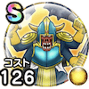

ボーンファイター
12章5話〜13章4話ブレードガードこころ最大コスト+4メラ属性耐性+7%ヒャド属性耐性+7%転び耐性+7%自分が受けるスキル・どうぐのHP回復効果+5% / 8.0点
くわしい特徴
【ランク特殊効果】 番兵のスクルトブレードガードこころ最大コスト+4スキルの斬撃・体技ダメージ+7%メラ属性耐性+9%ヒャド属性耐性+9%転び耐性+9%自分が受けるスキル・どうぐのHP回復効果+10%【ゴドハン】ゴッドガード発動率+3%【二刀】ガード率+2%ブレードガードこころ最大コスト+4メラ属性耐性+7%ヒャド属性耐性+7%転び耐性+7%自分が受けるスキル・どうぐのHP回復効果+5%